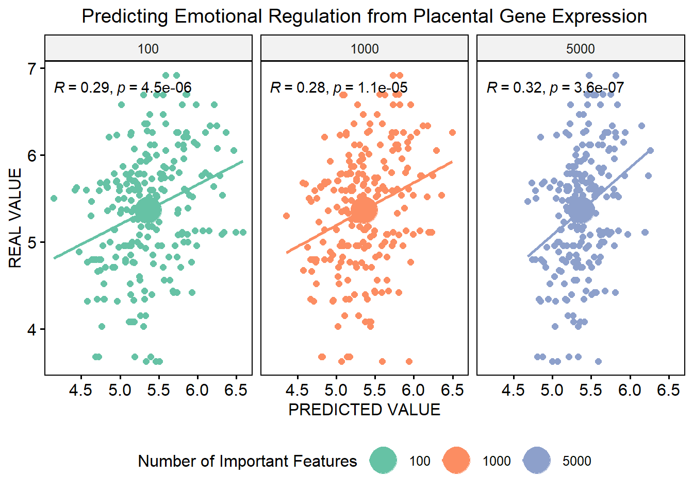

Chapter 1 Supervised Regression Modelling
 This is the basic framework. Nested CV will allow for using several training-test paritions in parallel in the outer loop.
The inner-loop features cross-validation with 5 folds of the training data. Finally, backward selection of gene features
allows you to build new models with a specified amout of “most important” features as determined from the training model.
This is the basic framework. Nested CV will allow for using several training-test paritions in parallel in the outer loop.
The inner-loop features cross-validation with 5 folds of the training data. Finally, backward selection of gene features
allows you to build new models with a specified amout of “most important” features as determined from the training model.
1.1 Training and Testing
Here we are going to use placental gene expression to predict maternal age and emotional regulation in children.
# Load necessary packages
suppressPackageStartupMessages({
library(caret)
library(DESeq2)
library(e1071)
library(pROC)
library(plyr)
library(stringr)
library(dplyr)
library(mboost)
library(gbm)
library(DESeq2)
library(dplyr)
library(pls)
library(ggplot2)
library(ggpubr)
library(gganimate)
library(gapminder)
library(cowplot)
library(directlabels)
library(gifski)
library(transformr)
library(RUncommon)
})
working.dir="C:/Users/grrompala/Desktop" # working directory
setwd(working.dir)
# Load in your gene counts and metadata
counts <- read.csv("counts.csv",header=T,row.names=1) # raw gene counts for each subject
meta <- read.csv("meta.csv",header=T,row.names=1) # metadata with 2 outcomes we will predict for each subject
head(counts[1:10,1:10])## S_1 S_10 S_100 S_103 S_106 S_107 S_108 S_109 S_10Q S_11
## A1BG-AS1 16 16 16 14 23 15 26 16 13 9
## A2M 30620 14070 24203 31400 43652 30419 34490 22477 33795 10351
## A2M-AS1 20 18 38 28 17 27 27 29 22 12
## A2ML1 165 22 7 4 31 8 14 10 13 18
## A2MP1 3 3 18 16 5 1 19 23 11 12
## A4GALT 1168 516 702 607 1147 462 687 822 628 622## STAI_TTO REG
## S_1 20 6.583333
## S_10 34 4.345238
## S_100 36 4.960000
## S_103 27 6.232143
## S_106 41 5.540000
## S_107 31 4.600000# Filter and normalize gene counts: we will use rowMeans>10 as a filter
counts <- counts[rowMeans(counts)>10,]
counts <- varianceStabilizingTransformation(as.matrix(counts))
counts <- t(counts)
# Filter metadata and subjects that are missing metadata for mom age or child emotional regulationHere we will employ common techniques employed to reduce number of predictors that may be introducing noise
# Filter counts by coefficient of variance
coef.var<-apply(subset(counts),2,function(x)sd(x)/mean(x)) # calculate coefficent of variance (CV)
genes2keep<-names(coef.var)[which(coef.var>0.05)] # extract genes to keep after CV threshold
coef_counts<-counts[,c(genes2keep)] # filter by genes to keep
#paste("Number of Genes Remaining:",length(colnames(coef_counts)),sep=" ")
# Filter counts using dimensionality reduction
CorrelationMatrix<-cor(coef_counts[,-1])
highlyCorrelated<-findCorrelation(CorrelationMatrix,cutoff=0.9,names=TRUE) # Filters genes with correlation R values greater than 0.8 (keeping the gene with least co-linearity)
COUNTS <-coef_counts[,setdiff(colnames(coef_counts),highlyCorrelated)]
paste("Number of Genes Remaining:",length(colnames(COUNTS)),sep=" ")## [1] "Number of Genes Remaining: 5885"Now, we will loop through our two outcome variables, building a partial least squares regression model for each
#global-options,include=TRUE,warning=FALSE}
#knitr::opts_chunk$set(warning=FALSE,message=FALSE,include=FALSE) # Settings to repress warning messages in the chunk
options(width = 60)
outcomes <- colnames(meta) # should be mother's trait anxiety and emotional regulation as vector
model <- c("glmnet") # set model
variables <- c(100,1000,5000) # Set how many ranked important variables to rebuild model with
# Initialize data summaries
final.summary <- data.frame(Buffer=character(),stringsAsFactors = FALSE)
all.predictions <- data.frame(holder=character(), stringsAsFactors=FALSE)
resample.summary <- data.frame(holder=character(), stringsAsFactors=FALSE)
varImp.summary <- data.frame(blank="")
# Looping through both traits and both features cut-offs (100,1000)
for (trait in outcomes)
{
metaF <- meta %>% filter(is.na(meta[[trait]])==F) # filter out NAs from outcome variable
counts <- COUNTS[rownames(metaF),] # filter subjects in counts with new metadata
working.META <- metaF[[trait]] # filters metadata for outcome
names(working.META) <- rownames(metaF)
train.parts <- createDataPartition(working.META,p=0.8,list=TRUE,times=10) # makes training and test sets
#(Here I am making 25 training-test splits of 80% train and 20% test)
cv.settings <- trainControl(method="repeatedcv",number=5,repeats=3) # cross-validation with
#splits data into 5 folds and repeats this three times
# Train regression model for each of your partitions
Regression.Models <-lapply(train.parts, function(L){
X.train <- counts[L,]
Y.train <- working.META[L]
train.parts <- rownames(X.train)
model.one <-train(y=Y.train,
x=X.train,
method=model,
trControl = cv.settings,
trace=FALSE)
importance<- varImp(model.one)$importance # outputs variables ranked by importance score
TrainID<-names(Y.train)
return(list(MODEL=model.one,TrainID=TrainID,importance=importance,train.parts=train.parts)) })
# Empty DFs to iterate through different feature variable cut-offs
df <- data.frame(New=character(), stringsAsFactors=FALSE)
predictionsT <- data.frame(New=character(), stringsAsFactors=FALSE)
resamplesT <- data.frame(New=character(), stringsAsFactors=FALSE)
for (import_num in variables) # Choose a few important variable cutoffs
{
VarImport.Models <- lapply(Regression.Models, function(L){
importance <- L$importance
varImps <- rownames(importance[order(importance$Overall,decreasing=T),,drop=FALSE])[1:import_num]
varImps <- str_remove_all(varImps,"`")
train.parts <- L$train.parts
X.train<- counts[train.parts,varImps]
Y.train<- working.META[train.parts]
model.one <-train(y=Y.train,
x=X.train,
method=model,
trControl = cv.settings,
trace=FALSE)
TrainID<-names(Y.train)
return(list(MODEL=model.one,TrainID=TrainID,varImps=varImps))})
# Compile model results
VarImport.Models.Results <- lapply(VarImport.Models,function(L){
ok<- getTrainPerf(L$MODEL)
return(ok) })
RM.Results <- ldply(VarImport.Models.Results,rbind)
# Use trained model on test dataset
Regression.Predictions<-lapply(VarImport.Models, function(L){
TrainID<-L$TrainID
TestID<-setdiff(rownames(counts),TrainID)
MODEL<-L$MODEL
varImps <- L$varImps
X.test<- counts[TestID,varImps]
Y.test<-working.META[TestID]
model.preds<-predict(MODEL,X.test)
table.preds<-cbind.data.frame(PRED=model.preds,REAL=Y.test)
table.preds$SampleID<-rownames(table.preds)
RMSE <- RMSE(model.preds,Y.test)
correlation <- cor(model.preds,Y.test)
return(list(testRMSE=RMSE,table.preds=table.preds,testR=correlation))})
# Generate best RMSEs and correlation R values for all test partitions
RMSE <- lapply(Regression.Predictions,function(L){
RMSE <- L$testRMSE
return(RMSE)})
RMSE <-do.call("rbind.data.frame",RMSE)
colnames(RMSE) <- NULL
# Get correlation between predictions and real scores for each train-test partition
corr <- lapply(Regression.Predictions,function(L){
corr <- L$testR
return(corr)})
corr <-do.call("rbind.data.frame",corr)
colnames(corr) <- NULL
# Compile results for each resample
results <- cbind(RM.Results,RMSE,corr)
results$trait <- trait
results$var.num <- import_num
resamplesT <- rbind.fill(resamplesT,results)
## Compile results summarizing each resample per trait and number of features
RM.Result <- RM.Results[,2:4]
averages <- cbind(RM.Result,RMSE,corr)
averagez <- colMeans(averages)
averages <- append(trait,averagez)
averages <- append(import_num,averages)
x <- data.frame(t(averages))
colnames(x)[1:2] <- c("Feature.number","Trait")
df <- rbind.fill(df,x)
## Bind and write all predictions out to file
Regression.Predictions <- lapply(Regression.Predictions,function(L){
Regression.Predictions <- L$table.preds
return(Regression.Predictions)})
Regression.Predictions <- mapply(`[<-`, Regression.Predictions, 'Partition', value = names(Regression.Predictions), SIMPLIFY = FALSE)
Regression.Predictions <- bind_rows(Regression.Predictions)
Regression.Predictions$trait <- trait
Regression.Predictions$feat.num <- as.factor(import_num)
predictionsT <- rbind.fill(predictionsT,Regression.Predictions)
# print(paste(import_num,"done",sep=" ")
}
# Write gene importance out to file
varImp.list <-lapply(Regression.Models, function(L){
importance<-varImp(L$MODEL)
return(importance$importance)})
varImp.list <- do.call("cbind",varImp.list)
colnames(varImp.list) <- c(paste("Resample.",1:length(colnames(varImp.list)),sep=""))
avg.varImp <- rowMeans(varImp.list)
# Bind results for each trait used
varImp.summary <- cbind(varImp.summary,avg.varImp)
final.summary <- rbind.fill(final.summary,df)
all.predictions <- rbind.fill(all.predictions,predictionsT)
resample.summary <- rbind.fill(resample.summary,resamplesT)
}Clean up the results data frames and perhaps write results to file
# remove excess
all.predictions <- all.predictions[,-c(1:2)]
resample.summary <- resample.summary[,-c(1:2)]
final.summary <- final.summary[,-c(1:2)]
varImp.summary <- varImp.summary[,-1]
colnames(varImp.summary) <- outcomes
# write.csv(final.summary[,-c(1:2)],file="Summary.REG.varImp.GLMNET.csv")
# write.csv(all.predictions[,-1],file="PREDICTIONS.REG.varImp.GLMNET.csv")
# write.csv(resample.summary,file="Resample.REG.varImp.GLMNET.csv")
# write.csv(varImp.summary,file="VarImp.summary.csv")1.2 Examining the Results
Here we depict predictions vs real values. Note all subjects are represented as we took the average prediction across all 10 test partitions.
# results for emtoional regulation
ok <- ggscatter(all.predictions %>% filter(trait=="REG"),
x="PRED",
y="REAL",
color="feat.num",
add="reg.line",
mean.point = T,
title="Predicting Emotional Regulation from Placental Gene Expression",
mean.point.size=9,
palette="Set2",
facet.by = "feat.num",
xlab="PREDICTED VALUE",
ylab="REAL VALUE")+
stat_cor(method = "pearson",show.legend = F)+
theme(plot.title = element_text(hjust = 0.5))
ok <- ggpar(ok,legend.title= "Number of Important Features",legend="bottom")
ok## `geom_smooth()` using formula 'y ~ x'
The same thing here, just using gganimate
p <- ggplot(all.predictions %>% filter(trait=="REG"), aes(x=PRED, y=REAL)) +
geom_point(alpha = 0.7, show.legend = FALSE) +
geom_smooth(method='lm', formula= y~x)+
stat_smooth_func(geom="text",method="lm",hjust=0,parse=TRUE)+
# stat_regline_equation()+
#scale_colour_manual(values = country_colors) +
#scale_size(range = c(2, 12)) +
#scale_x_log10() +
#facet_wrap(~continent) +
# Here comes the gganimate specific bits
labs(title="Child Emotional Regulation",subtitle = "Number of Features: {closest_state}", x = 'PREDICTED', y = 'REAL') +
transition_states(feat.num) +
theme(
plot.title = element_text(face="bold")
)
animate(p, duration = 5, fps = 50, width = 500, height = 500, renderer = gifski_renderer())
RMSE (Root Mean Square Error) is used to evaluate test performance. This tells you the average difference between the real and predicted values (i.e, the residual).
resample.stat <- resample.summary %>% filter(trait=="REG") %>% group_by(var.num) %>% summarise(
mean=mean(RMSE),
se=sd(RMSE)/sqrt(n()))
ggplot(resample.stat,aes(x=var.num,y=mean))+
geom_line(color="black",size=1)+
geom_point(color="red",size=5)+
geom_errorbar(aes(ymin = mean - se, ymax = mean + se), color="red",width=300,size=1)+
labs(title="Emotional Regulation: Test Performance", x = 'Features', y = 'Mean RMSE',hjust=0.5)+
scale_x_continuous(breaks=c(100,1000,5000))+
ylim(0.5,.75)+
theme(plot.title=element_text(size=18,face="bold"),
axis.title=element_text(size=14,face="bold"),
axis.text.x = element_text(size=12),
axis.text.y=element_text(size=12))
Showing how RMSE changed with each resampling test partition
resample.summary$ID <- rep(1:10,times=6,each=1)
p <- ggplot(resample.summary %>% filter(trait=="REG"), aes(x=ID, y=RMSE,group=as.factor(var.num),color=as.factor(var.num))) +
geom_line()+
geom_point(alpha = 0.7, show.legend = FALSE) +
scale_x_continuous(breaks=c(1:10))+
scale_color_discrete(name="Number of Impotant Features")+
labs(x="Resample number",y="RMSE",title="Emotional Regulation:Test Performance")+
transition_reveal(ID) +
theme(
plot.title = element_text(face="bold")
)
animate(p, duration = 8, fps = 50, width = 700, height = 500, renderer = gifski_renderer(),end_pause = 100)
Taking a look at most important variables for each trait
## Sort by highest importance to lowest
#m <- varImp.summary %>% arrange(desc(REG))
#ggplot(aes(x=`car name`, y=mpg_z, label=mpg_z)) +
#geom_bar(stat='identity', aes(fill=mpg_type), width=.5) +
# scale_fill_manual(name="Mileage",
# labels = c("Above Average", "Below Average"),
# values = c("above"="#00ba38", "below"="#f8766d")) +
#labs(subtitle="Normalised mileage from 'mtcars'",
# title= "Diverging Bars") +
# coord_flip()